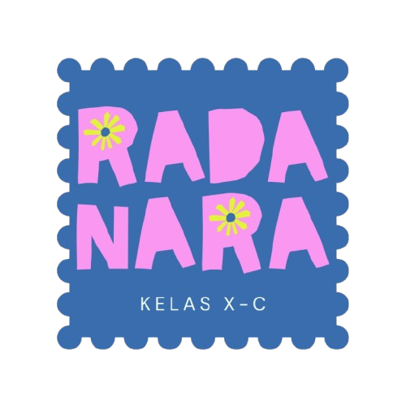

RADANARA merupakan gabungan nama dari keempat anggota kelompok yang melambangkan persatuan dan kebersamaan. Warna biru melambangkan kekompakan dan kepercayaan, sedangkan pink melambangkan keceriaan dan kehangatan dalam kelompok. Bunga kuning melambangkan kreativitas, semangat, dan pertumbuhan. Secara keseluruhan, logo RADANARA menggambarkan empat individu yang berbeda, tetapi bersatu dan saling melengkapi sebagai satu kelompok.